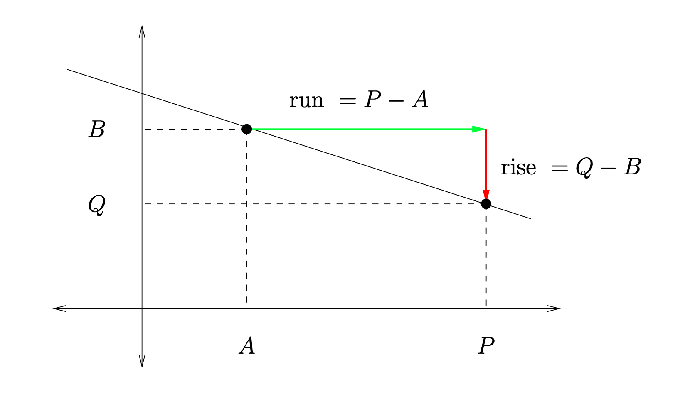

This section covers some basic algebra skills needed in this course.
Subsection1.2.1Basics for lines
Let \(L\) be a line in the \(x,y\)-plane that is not vertical (that is, not parallel to the \(y\)-axis). Visualize traveling along the line \(L\) from a starting point \((A,B)\) to a final point \((P,Q)\text{.}\) From start to finish, your position along the \(x\)-axis will change from \(A\) to \(P\text{.}\) The deviation of \(P\) from \(A\) (also called the horizontal displacement from \((A,B)\) to \((P,Q)\)) is called the run of your trip.
\begin{equation*}
\text{ run } = P-A
\end{equation*}
Likewise, your position along the \(y\)-axis will change from \(B\) to \(Q\text{.}\) The deviation of \(Q\) from \(B\) (also called the vertical displacement) is called the rise of your trip. See Figure Figure 1.2.1.
\begin{equation}
Q=\text{ (slope)(run)} + B = \text{ (slope)}(P-A)+B.\tag{1.2.2}
\end{equation}

Figure1.2.1.Rise and run.
Here is a basic problem involving lines: You are given a line \(L\text{,}\) the slope \(m\) of \(L\text{,}\) a starting point \((A,B)\) on \(L\text{,}\) and the \(x\)-coordinate \(P\) of a final point \((P,Q)\) on \(L\text{.}\) Your task is to find \(Q\text{.}\)
The solution uses (1.2.2) broken into three these steps:
Find the run using \(\text{ run } = P-A\text{.}\)
Find the rise using \(\text{ rise } = \text{ (slope)(run)}\text{.}\)
Find \(Q\) using \(Q=\text{ rise } + B\text{.}\)
Exercises1.2.2Algebra practice problems
1.
Consider the equation \(A = \frac{BC + D}{E}\text{.}\)